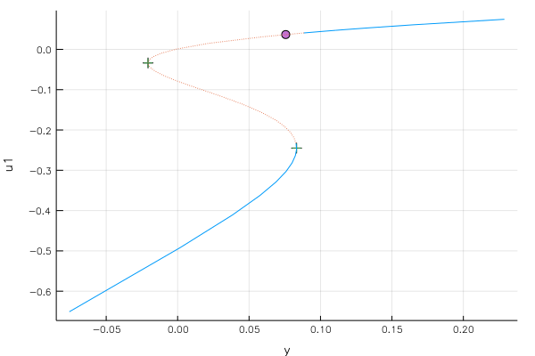
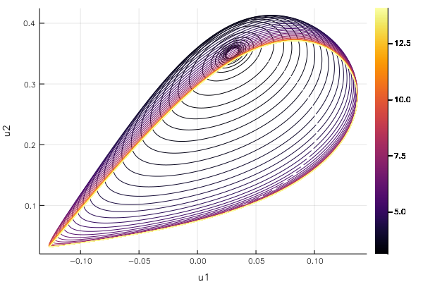
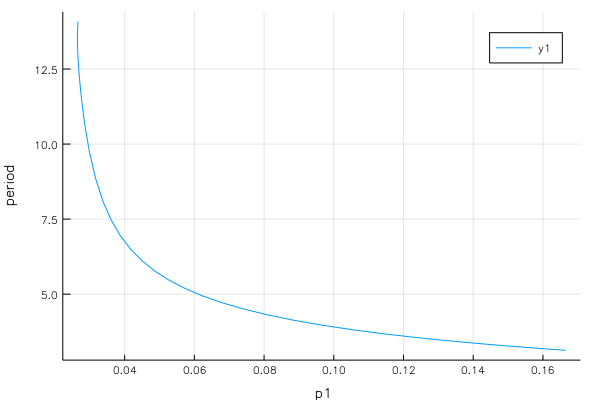
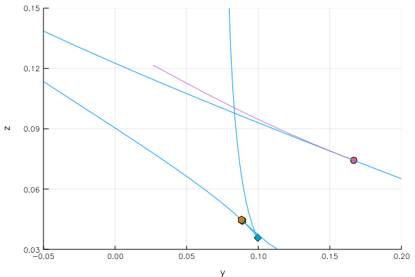

Modified Morris-Lecar model
Modified Morris-Lecar model from Dhooge, Govaerts, Kuznetsov (2003):
- Dhooge, Govaerts, Kuznetsov (2003). Numerical Continuation of Fold Bifurcations of Limit Cycles in MATCONT
using Bifurcations
using Bifurcations: special_points
using Bifurcations.Codim1
using Bifurcations.Codim2
using Bifurcations.Codim2LimitCycle: FoldLimitCycleProblem
using Bifurcations.Examples: MorrisLecar
using Setfield: @lens
using Plots
Solve continuation of the equilibrium point:
solver = init(
MorrisLecar.make_prob();
start_from_nearest_root = true,
max_branches = 0,
nominal_angle_rad = 2π * (5 / 360),
)
@time solve!(solver)
1.583652 seconds (1.81 M allocations: 97.573 MiB, 4.27% gc time)
Codim1Solver <Continuous>
# sweeps : 2
# points : 41
# branches : 0
# saddle_node : 2
# hopf : 1
Plot equilibriums in $(u_1, y)$-space:
plt1 = plot(solver)

Start continuation of Hopf bifurcation
hopf_point, = special_points(solver, Codim1.PointTypes.hopf)
1-element Array{Bifurcations.BifurcationsBase.SpecialPointInterval{Bifurcations.BifurcationsBase.Continuous,Bifurcations.Codim1.PointTypes.PointType,StaticArrays.SArray{Tuple{3},Float64,1,3},StaticArrays.SArray{Tuple{2,3},Float64,2,6}},1}:
SpecialPointInterval <Continuous hopf>
happened between:
u0 = [0.0407794, 0.306436, 0.0883504]
u1 = [0.0314239, 0.279715, 0.0601626]
Solve continuation of the Hopf point:
codim2_prob = BifurcationProblem(
hopf_point,
solver,
(@lens _.z),
(-1.0, 1.0),
)
hopf_solver1 = init(
codim2_prob;
nominal_angle_rad = 0.01,
)
@time solve!(hopf_solver1)
24.403613 seconds (40.67 M allocations: 2.027 GiB, 7.20% gc time)
Codim2Solver <Continuous>
# sweeps : 2
# points : 55
# branches : 0
# bautin : 1
Start continuation of fold bifurcation of limit cycle at Bautin bifurcation
bautin_point, = special_points(hopf_solver1, Codim2.PointTypes.bautin)
1-element Array{Bifurcations.BifurcationsBase.SpecialPointInterval{Bifurcations.BifurcationsBase.Continuous,Bifurcations.Codim2.PointTypes.PointType,StaticArrays.SArray{Tuple{9},Float64,1,9},StaticArrays.SArray{Tuple{8,9},Float64,2,72}},1}:
SpecialPointInterval <Continuous bautin>
happened between:
u0 = [0.0298965, 0.350792, 0.367924, 0.382807, 0.82458, -0.195343, 2.0067, 0.165926, 0.0745246]
u1 = [0.0295841, 0.35324, 0.367212, 0.382471, 0.824988, -0.19562, 2.01059, 0.169869, 0.0734342]
Construct a problem for fold bifurcation of the limit cycle starting at bautin_point:
flc_prob = FoldLimitCycleProblem(
bautin_point,
hopf_solver1;
period_bound = (0.0, 14.0), # see below
num_mesh = 120,
degree = 4,
)
flc_solver = init(
flc_prob;
start_from_nearest_root = true,
max_branches = 0,
bidirectional_first_sweep = false,
nominal_angle_rad = 2π * (5 / 360),
max_samples = 500,
)
@time solve!(flc_solver)
1390.754701 seconds (218.78 M allocations: 36.351 GiB, 2.47% gc time)
BifurcationSolver <Continuous>
# sweeps : 1
# points : 46
# branches : 0
Plot the limit cycles at fold bifurcation boundaries:
plt_state_space = plot_state_space(flc_solver)

The continuation was configured to stop just before the period is about to diverge. Note that stopping at larger period requires larger mesh size.
plt_periods = plot(flc_solver, (x=:p1, y=:period))

Start continuation of Saddle-Node bifurcation
sn_point, = special_points(solver, Codim1.PointTypes.saddle_node)
2-element Array{Bifurcations.BifurcationsBase.SpecialPointInterval{Bifurcations.BifurcationsBase.Continuous,Bifurcations.Codim1.PointTypes.PointType,StaticArrays.SArray{Tuple{3},Float64,1,3},StaticArrays.SArray{Tuple{2,3},Float64,2,6}},1}:
SpecialPointInterval <Continuous saddle_node>
happened between:
u0 = [-0.0311873, 0.140701, -0.0206357]
u1 = [-0.0373, 0.130813, -0.0205553]
SpecialPointInterval <Continuous saddle_node>
happened between:
u0 = [-0.23318, 0.00999542, 0.0828906]
u1 = [-0.247815, 0.00818325, 0.0832351]
Going back to the original continuation of the equilibrium, let's start continuation of one of the saddle-node bifurcation:
sn_prob = BifurcationProblem(
sn_point,
solver,
(@lens _.z),
(-1.0, 1.0),
)
sn_solver = init(
sn_prob;
nominal_angle_rad = 0.01,
max_samples = 1000,
start_from_nearest_root = true,
)
@time solve!(sn_solver)
2.960207 seconds (5.26 M allocations: 284.248 MiB, 6.45% gc time)
Codim2Solver <Continuous>
# sweeps : 2
# points : 385
# branches : 0
# cusp : 1
# bogdanov_takens : 1
Switching to continuation of Hopf bifurcation at Bogdanov-Takens bifurcation
hopf_prob2 = BifurcationProblem(
special_points(sn_solver, Codim2.PointTypes.bogdanov_takens)[1],
sn_solver,
)
hopf_solver2 = init(hopf_prob2)
@time solve!(hopf_solver2)
0.002538 seconds (4.01 k allocations: 698.188 KiB)
Codim2Solver <Continuous>
# sweeps : 2
# points : 11
# branches : 0
# bogdanov_takens : 1
Phase diagram
plt2 = plot()
for s in [hopf_solver1, flc_solver, sn_solver, hopf_solver2]
plot!(plt2, s)
end
plot!(plt2, ylim=(0.03, 0.15), xlim=(-0.05, 0.2))
